Drink feedDrink-Feed
See every drink, right as it happens. Your personal feed keeps a running log of everything you log — with photos, locations, and comments. Sieh jeden Drink, sobald du ihn einträgst. Dein persönlicher Feed zeigt alles, was du loggst — mit Fotos, Orten und Kommentaren.

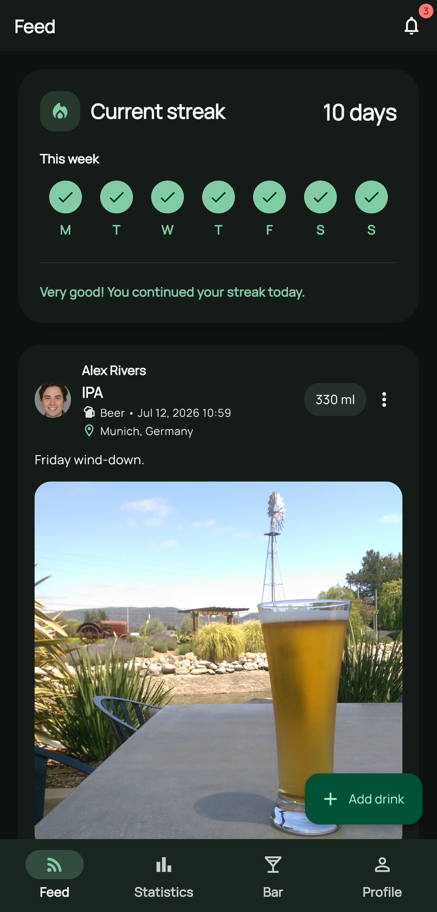

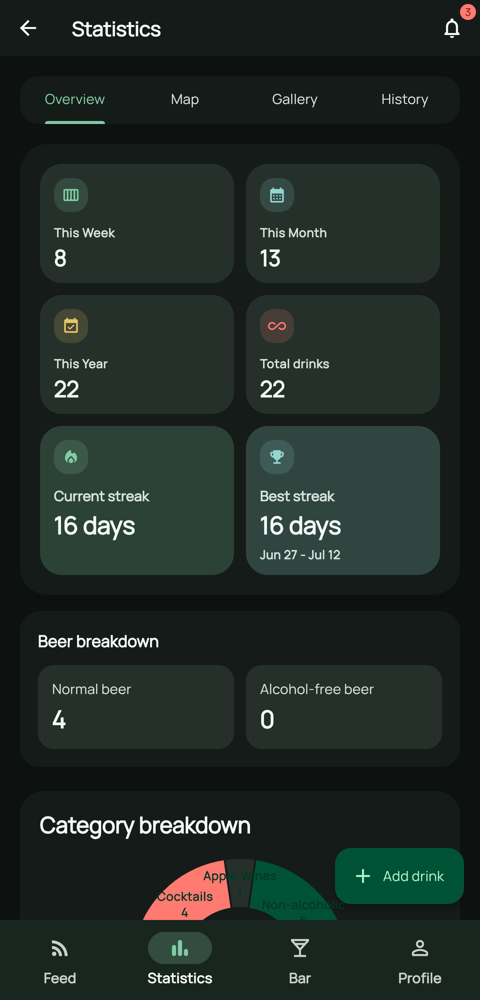
Your habits, at a glanceDeine Gewohnheiten auf einen Blick
Streaks and quick-read stat cards summarize your drinking patterns instantly. Streaks und übersichtliche Statistik-Karten fassen deine Trinkgewohnheiten sofort zusammen.
Know what you actually drinkErfahre, was du wirklich trinkst
A category breakdown shows the split between beer, wine, cocktails, and more. Die Kategorie-Übersicht zeigt die Verteilung zwischen Bier, Wein, Cocktails und mehr.

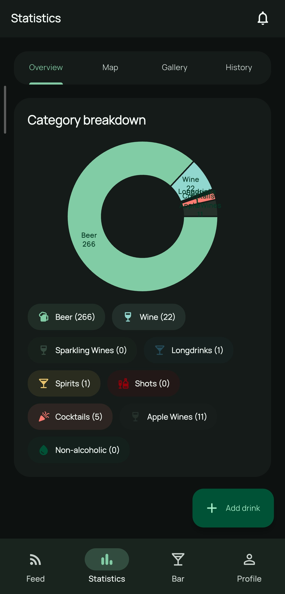

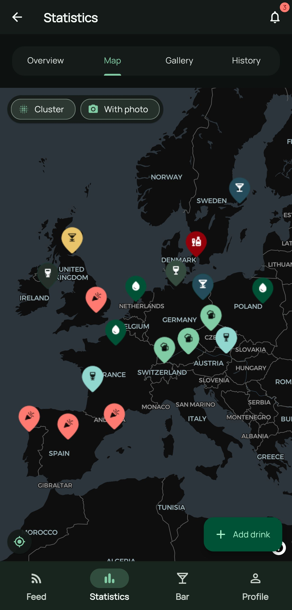
Every drink has a placeJeder Drink hat einen Ort
See where you've been drinking on an interactive map of your history. Sieh auf einer interaktiven Karte, wo du überall unterwegs warst.
Relive it in picturesErlebe es noch einmal in Bildern
Every photo you've attached to a drink, collected in one scrollable gallery. Jedes Foto, das du zu einem Drink hinzugefügt hast, gesammelt in einer Galerie.

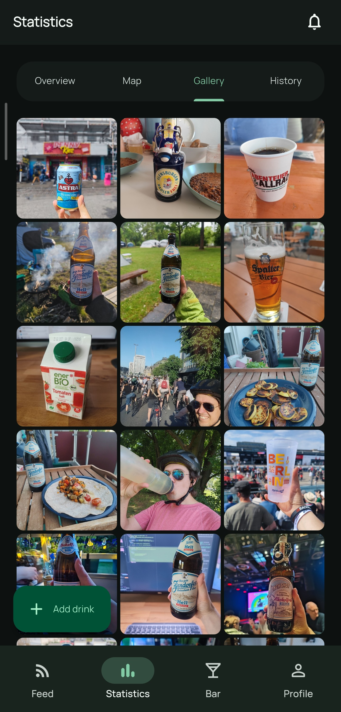
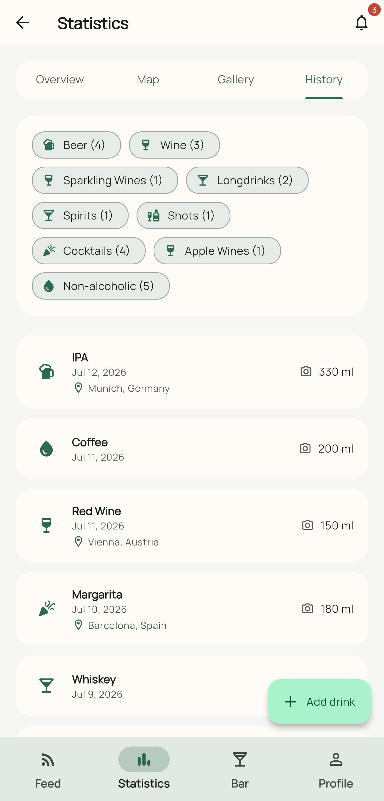

Every entry, in orderJeder Eintrag, in Reihenfolge
A straightforward chronological list view of your full drink history. Eine übersichtliche, chronologische Listenansicht deiner gesamten Trinkhistorie.
Log a drink in secondsTrage einen Drink in Sekunden ein
Pick from your recents, the global catalog, or your own custom drinks — add a photo, location, and note without friction. Wähle aus deinen letzten, dem globalen Katalog oder deinen eigenen Drinks — mit Foto, Ort und Notiz, ganz ohne Umstände.


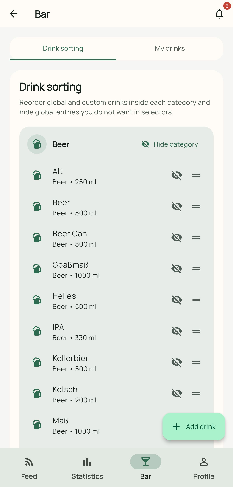
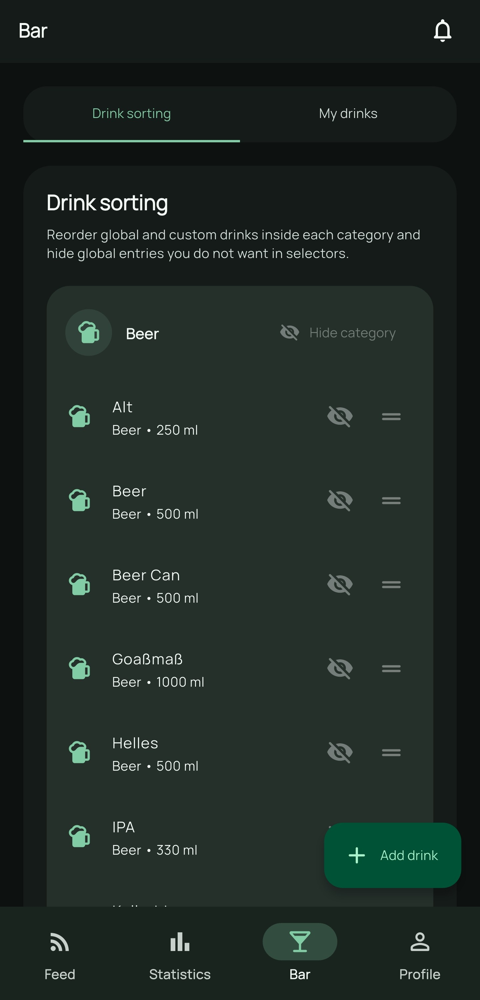

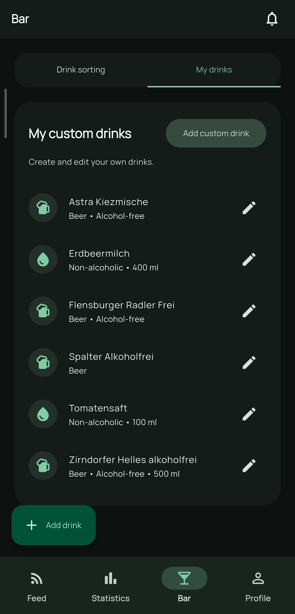
Your bar, your wayDeine Bar, wie du sie willst
Sort and hide drinks from the global catalog, or add your own custom ones — build the list that matches how you actually drink. Sortiere und blende Drinks aus dem globalen Katalog aus oder füge eigene hinzu — bau dir die Liste, die zu dir passt.
Make it yoursMach es zu deinem
Set a display name, profile photo, and birthday, and fine-tune the app to fit how you use it — including a left-handed mode. Lege Anzeigename, Profilfoto und Geburtstag fest und passe die App an dich an — inklusive Linkshänder-Modus.

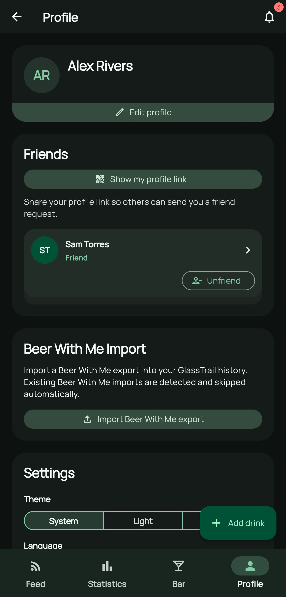
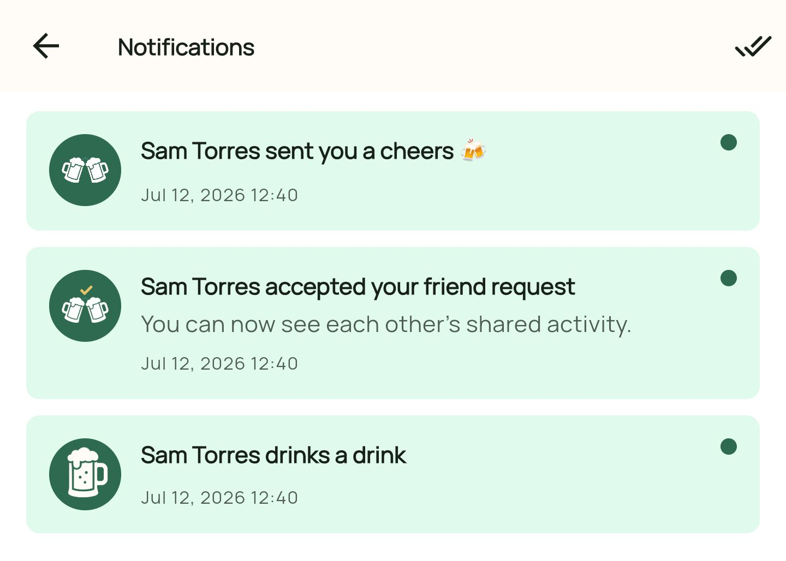
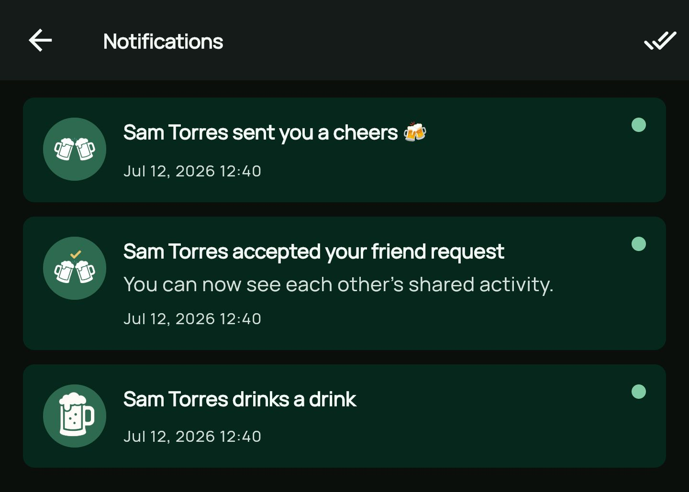
Never miss what mattersVerpasse nie, was zählt
Get notified about friend requests, new friendships, and new drinks from people you follow. Erhalte Benachrichtigungen zu Freundschaftsanfragen, neuen Freundschaften und neuen Drinks von Leuten, denen du folgst.
Looks good, day or nightSieht gut aus, Tag und Nacht
GlassTrail adapts instantly to your system theme — or switch it yourself, anytime. GlassTrail passt sich sofort deinem System-Theme an — oder du schaltest selbst um, jederzeit.
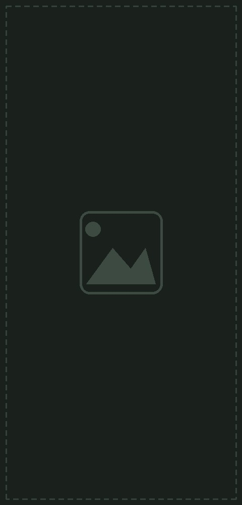
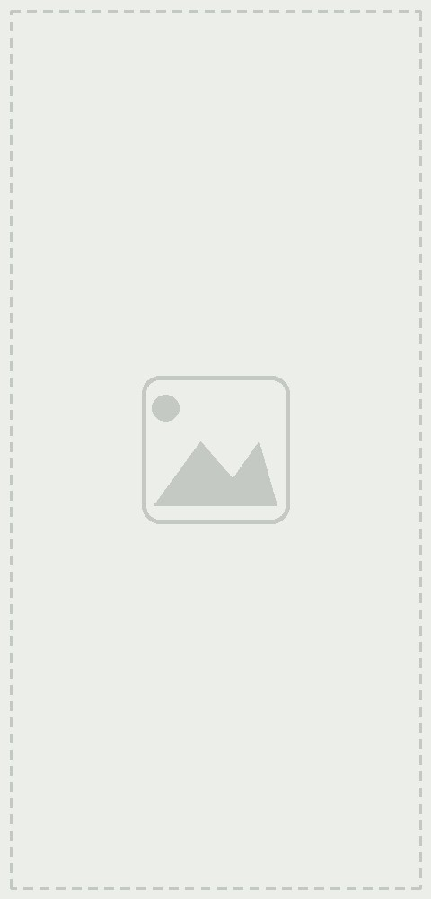
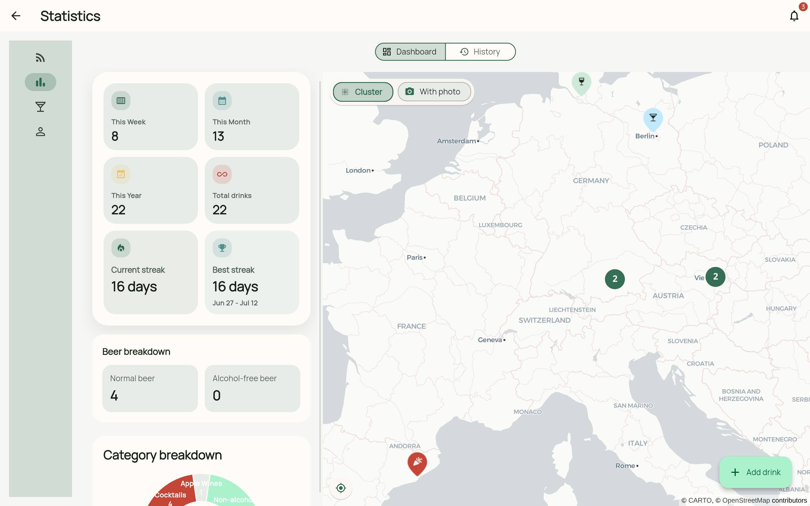
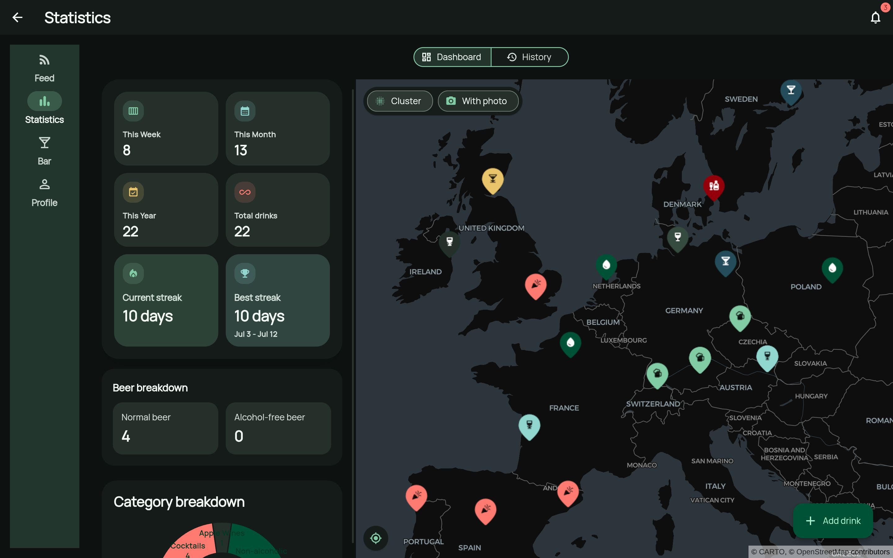
Same app, bigger canvasDieselbe App, mehr Platz
Open GlassTrail on desktop and the layout grows with you — feed, stats, and bar arranged side by side instead of one narrow column. Öffne GlassTrail auf dem Desktop, und das Layout wächst mit — Feed, Statistiken und Bar nebeneinander statt in einer schmalen Spalte.